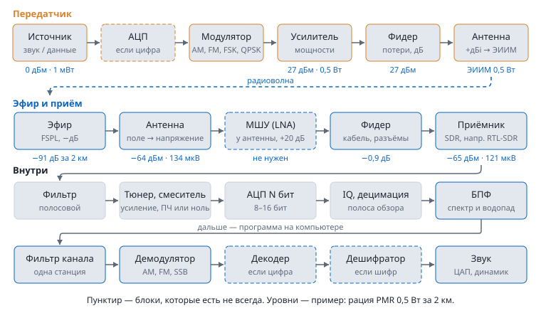

Содержание › Основы радиоприёма
Путь радиосигнала
Как голос из рации попадает в динамик вашего компьютера: что происходит с сигналом в передатчике, в эфире, в антенне, в кабеле и внутри приёмника SDR (например, RTL-SDR), и какой у него уровень в каждой точке — в децибелах, ваттах и вольтах.
Схема откроется в браузере: анимации модуляции, оцифровки, спектра и водопада, демодуляции AM и FM, калькулятор уровней с ползунками и сравнение аналога и цифры при шуме. Интернет не нужен.

Цепочка по шагам#
- Источник. Микрофон даёт единицы милливольт; после усилителя и модулятора на выходе возбудителя около 1 мВт (0 дБм, 0,22 В на 50 Ом).
- Оцифровка — только в цифровом тракте: АЦП измеряет звук fд раз в секунду (дискретизация) и округляет до 2N уровней (квантование).
- Модуляция — сообщение меняет амплитуду (AM), частоту (FM, FSK) или фазу (QPSK) несущей (подробнее).
- Усилитель мощности поднимает уровень до ватт и киловатт: усиление в дБ прибавляется к дБм.
- Фидер (кабель) отнимает часть мощности, тем больше, чем он длиннее и выше частота.
- Антенна направляет энергию: её усиление (дБi) даёт ЭИИМ = мощность − потери фидера + усиление.
- Эфир. Волна расходится сферой: потери FSPL = 20·lg d + 20·lg f + 32,44 (d в км, f в МГц). Дома, лес и рельеф добавляют ещё 10–40 дБ.
- Приёмная антенна. Поле волны толкает электроны в проводе, на выходе антенны появляется напряжение: у полуволнового диполя ЭДС = E·λ/π.
- МШУ (LNA) нужен только на участке антенна → приёмник: он перекрывает потери кабеля и шум приёмника. Ставить его надо у антенны, до кабеля (подробнее).
- Фидер к приёмнику — снова потери: на 10 м RG-58 около 1,6 дБ на 100 МГц и 3,6 дБ на 446 МГц; плюс 0,1–0,3 дБ на каждый разъём; намокший кабель теряет в разы больше.
- Приёмник SDR: входной фильтр → тюнер и смеситель (усиление, перенос на ПЧ или в ноль) → АЦП N бит → цифровой смеситель и децимация до полосы обзора (поток IQ) → БПФ (спектр и водопад) → фильтр канала → демодулятор (AM — длина вектора IQ, FM — скорость поворота фазы) → декодер для цифры (DMR: символы → биты → кадры → вокодер) → дешифратор, если сигнал зашифрован → звук. Например, в RTL-SDR: тюнер R820T/R828D, АЦП 8 бит, полоса обзора до 2,4–3,2 МГц; у Airspy R2 — 12 бит и 10 МГц, у SDRplay RSP — 14 бит, у HackRF — 8 бит и до 20 МГц, у профессиональных SDR — 16 бит.
Таблица уровней#
Сквозной расчёт для свободного пространства. Мощность в милливаттах P = 10дБм/10, напряжение на нагрузке U = √(P·R), R = 50 Ом.
| Точка тракта | Рация PMR, 0,5 Вт, 2 км | FM-вещание, 10 кВт, 50 км | «Метеор-М», 5 Вт, 800 км |
|---|---|---|---|
| Возбудитель | 0 дБм · 1 мВт · 0,22 В | 0 дБм · 1 мВт · 0,22 В | 0 дБм · 1 мВт · 0,22 В |
| После усилителя | 27 дБм · 0,5 Вт · 5 В | 70 дБм · 10 кВт · 707 В | 37 дБм · 5 Вт · 16 В |
| Фидер передатчика | нет (антенна на рации) | 50 м LMR-400: −2,4 дБ | 1 м: −0,5 дБ |
| Антенна, ЭИИМ | 0 дБi → 0,5 Вт | 6 дБi → 23 кВт | 0 дБi → 4,5 Вт |
| Потери в эфире | −91 дБ (446 МГц) | −106 дБ (100 МГц) | −133 дБ + 3 дБ поляризация (137,9 МГц) |
| Выход приёмной антенны | −64 дБм · 360 пВт · 134 мкВ | −33 дБм · 0,5 мкВт · 5 мВ | −98 дБм · 0,17 пВт · 2,9 мкВ (диполь 2 дБi) |
| МШУ | не нужен | не нужен | +20 дБ → −78 дБм · 29 мкВ |
| Вход приёмника | 2 м RG-58: −65 дБм · 121 мкВ | 10 м RG-6: −34 дБм · 4,5 мВ | 10 м RG-58: −80 дБм · 22 мкВ |
| RSSI / S-метр | −65 дБм · S9+28 дБ | −34 дБм · S9+59 дБ | −80 дБм · S9+13 дБ |
| Шум в канале | −128 дБм (12,5 кГц) | −115 дБм (200 кГц) | −122 дБм (120 кГц, КШ с МШУ 0,9 дБ) |
| Сигнал/шум | ≈ 63 дБ | ≈ 83 дБ | ≈ 25 дБ |
- В городе за домами рация теряет ещё 20–30 дБ — поэтому реальная дальность PMR — сотни метров, а не десятки километров.
- «Метеор» на угле места 10° уже в ≈ 2400 км (ещё −9,5 дБ), а у самого горизонта (0°) — в ≈ 3300 км (−12 дБ). На спектре сигнал шириной 120 кГц делится на бины шириной RBW (например, у RTL-SDR с полосой 2,4 МГц при БПФ 2048 точек это ~1–2 кГц), поэтому в одном бине он выглядит на ~20 дБ слабее — около −120 дБм.
- Предел входа у каждого приёмника свой: например, у RTL-SDR перегрузка начинается сильнее −30 дБм, у приёмников с 12–16-битным АЦП и преселектором — на 20–30 дБ выше. Самые слабые различимые сигналы — около −120…−130 дБм (доли микровольта) в узком канале.
RSSI и S-метр. Приёмник измеряет RSSI — мощность в полосе канала на своём входе (последняя строка «Вход приёмника» в таблице, если весь сигнал помещается в канал). S-метр переводит её в баллы IARU: по 6 дБ на балл, S9 = −73 дБм (50 мкВ) ниже 30 МГц и −93 дБм (5 мкВ) выше; в примерах выше это S9+28 дБ у рации, S9+59 дБ у FM-станции и S9+13 дБ у «Метеора» после МШУ. Программа SDR показывает уровень в дБFS — относительно полной шкалы АЦП; в дБм его переводит только калибровка генератором известного уровня. В режиме «Радио» SDR4NOOB баллы S — примерная оценка по усилению тюнера (без калибровки, для сравнения станций). Запас по связи = RSSI − (шум в полосе + требуемое С/Ш): для NFM-речи нужно ≈ 12 дБ, для DMR ≈ 5–7 дБ, для LRPT ≈ 5–8 дБ.
Децибелы, ватты и вольты#
| дБм | Мощность | Напряжение на 50 Ом | Пример |
|---|---|---|---|
| +70 | 10 кВт | 707 В | FM-передатчик большого города |
| +27 | 0,5 Вт | 5 В | рация PMR446 |
| 0 | 1 мВт | 224 мВ | выход возбудителя, генератор |
| −30 | 1 мкВт | 7 мВ | перегрузка недорогого SDR (например, RTL-SDR) |
| −60 | 1 нВт | 224 мкВ | рация в соседнем доме |
| −107 | 20 фВт | 1 мкВ | 0 дБмкВ: слабая, но разборчивая станция |
| −120 | 1 фВт | 0,22 мкВ | на грани шума в узком канале |
Подробно о децибелах — в разделе «Единицы и децибелы». Все формулы и ползунки, которые пересчитывают уровни по цепочке, — в интерактивной схеме.